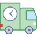

Corporate Green

Be Green, everyday!

Food Delivery


Food Waste - Recycling, Disposal and Composte
Feedback
We work with vendors, using third-party API's to make sure your food is packaged sustainably by the restaurant of your choice (only certain vendors have agreed to work with us, to deliver their food in this way). We also work with delivery services to pick up that sustainably packaged food, and deliver it to you, so that you can enjoy your lunch without wasting resources. Everybody wins!
The same vendors who deliver the food are able to return to pick up your containers, and or waste, and then dispose of them in the proper places. You do not have to worry about a thing!
You tell us how we're doing in real time, we will keep improving. We look forward to working with more and more organizations who will benefit from this model; the lunchers and the restaurants alike.